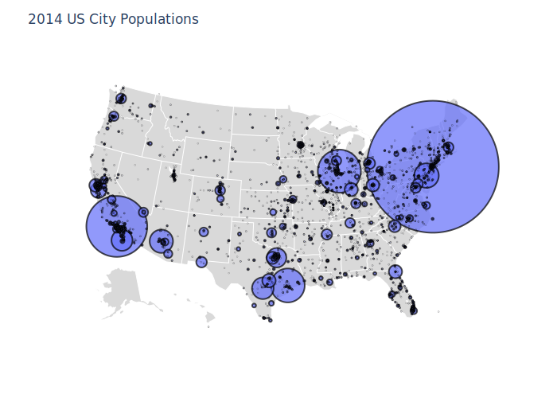

using PlotlyJS, DataFrames, CSV, HTTP
function maps1()
marker = attr(size=[20, 30, 15, 10],
color=[10, 20, 40, 50],
cmin=0,
cmax=50,
colorscale="Greens",
colorbar=attr(title="Some rate",
ticksuffix="%",
showticksuffix="last"),
line_color="black")
trace = scattergeo(;mode="markers", locations=["FRA", "DEU", "RUS", "ESP"],
marker=marker, name="Europe Data")
layout = Layout(geo_scope="europe", geo_resolution=50, width=500, height=550,
margin=attr(l=0, r=0, t=10, b=0))
plot(trace, layout)
end
maps1()
function maps2()
# read Data into dataframe
url = "https://raw.githubusercontent.com/plotly/datasets/master/2014_us_cities.csv"
df = DataFrame(CSV.File(HTTP.get(url).body))
trace = scattergeo(;locationmode="USA-states",
lat=df.lat,
lon=df.lon,
hoverinfo="text",
text=[string(x.name, " pop: ", x.pop) for x in eachrow(df)],
marker_size=df.pop ./ 50_000,
marker_line_color="black", marker_line_width=2)
geo = attr(scope="usa",
projection_type="albers usa",
showland=true,
landcolor="rgb(217, 217, 217)",
subunitwidth=1,
countrywidth=1,
subunitcolor="rgb(255,255,255)",
countrycolor="rgb(255,255,255)")
layout = Layout(;title="2014 US City Populations", showlegend=false, geo=geo)
plot(trace, layout)
end
maps2()
